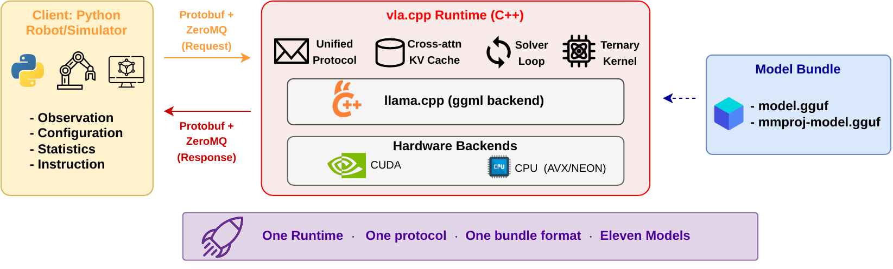
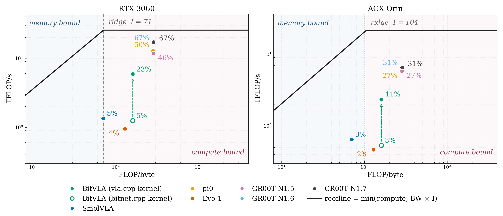
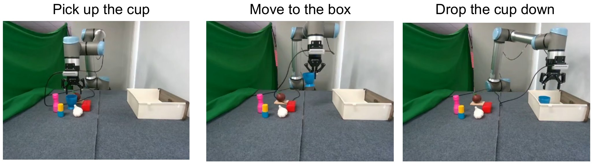
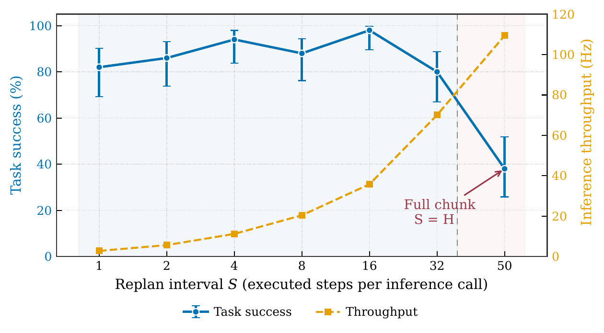

vla.cpp: A Unified Inference Runtime for
Vision–Language–Action Models
Eleven vision–language–action policies, one C++ runtime — from a
desktop GPU down to an 8 GB Jetson, with no PyTorch at inference time.
11 models
one runtime, one bundle format
200/200
BitVLA episodes on an 8 GB Jetson Orin Nano
4.0–4.6×
ternary tensor-core kernel over the CUDA-core baseline
5
5 backends
nbsp;backends
CUDA, Metal, CPU, SYCL and OpenVINO
Abstract
Deploying vision–language–action (VLA) models on robots requires
adapting model-specific inference pipelines to heterogeneous processors and limited onboard
memory. We present vla.cpp, a unified C++ inference runtime for eleven VLA models.
The runtime shares model loading, tensor execution, and serving while retaining
architecture-specific attention, conditioning, and action heads. Iterative policies reuse
observation-dependent computation across solver steps; regression policies use a direct
prediction path. We evaluate task success on LIBERO-Object and profile supported configurations
on NVIDIA, Apple, and Intel hardware. BitVLA completes 200/200 LIBERO-Object episodes on an
8 GB Jetson Orin Nano; a separate desktop measurement records 1.3 GiB of device memory.
A ternary tensor-core kernel accelerates its client inference by 4.0–4.6× over the
CUDA-core baseline on RTX 3060 and AGX Orin. A SmolVLA case study identifies a
positional-index precision mismatch that changes gripper commands and task success, motivating
fixed-input numerical checks alongside rollout evaluation. Physical deployments on UR10e and
ALOHA demonstrate robot integration, while separate delay and execution-horizon studies
characterize synchronous action replay.
Overview of vla.cpp. Demo footage is sped up.
Try it: what runs where
Eleven policies, eight measured platforms, and three separate experiments behind
them. Pick a device, click a model, and the page shows exactly what the paper reports for that
pair — including the pairs it does not report.
Beyond the tableA second simulated benchmark
Everything above is LIBERO-Object. On SimplerEnv’s WidowX tasks at
252-pixel input, GR00T-N1.6 reaches 80% on “put carrot on plate” and 70% on
“put spoon on towel”.
Video placeholder
simplerenv-carrot-plate.mp4
Put carrot on plate. The paper reports 80% for
GR00T-N1.6 on this task.
Video placeholder
simplerenv-eggplant-basket.mp4
Put eggplant in the basket. Shown as a rollout only;
the paper reports no rate for this task.
Method

Architecture. The C++ server loads GGUF weights and returns action chunks; the
client owns sensing and control. Adapters select model-specific computation — attention
pattern, conditioning and action head — while loading, tensor execution and serving are
shared. CUDA and CPU illustrate the backend layer; Metal, SYCL and OpenVINO use the same
runtime interface. Observation tokens form a prefix whose features and projections are reused
across solver steps, so an iterative head pays for conditioning once per query rather than
once per step.

Where the work lands. Estimated arithmetic intensity and throughput. Compute
ceilings are measured GEMM rates of 25.6 and 21.3 TFLOP/s; bandwidth ceilings are 360 and
204.8 GB/s for the RTX 3060 and AGX Orin. Point labels give achieved throughput
as a fraction of the ceiling. Placement depends on FLOP and byte accounting.
Numerical validation, not just rollouts. A prediction-check tool fixes
weights, images, tokens, state, noise, masks, schedules and transforms, then compares runtime
actions against the reference on maximum absolute and relative RMS error, with intermediate
tensors to localise a discrepancy. The SmolVLA case study is what this is for: its vision encoder
maps patch coordinates to discrete indices, and computing them at a different precision moves a
value across an index boundary. Matching the reference takes the position-embedding relative error
from 0.32 to 0.003 and LIBERO-Object task 0 from 2/10 to 9/10 episodes. A rollout score alone
would not have located it.
On real robots
Two embodiments under synchronous chunked control: the client executes
S actions from each chunk, then waits for the next prediction.
UR10e · AOne task, four backends
SmolVLA fine-tuned on 80 demonstrations of a cup pick-and-place, with
S = 25 actions at 20 Hz and 20 episodes per backend.

The task. Grasp the cup, carry it to the basket, release it. All 80 evaluated
rollouts grasp and carry; every one of the 27 failures happens at release. That shared failure
mode is why binary success barely moves across backends even as latency changes by
33×.
Backend
Round trip
Success [95% CI]
Effective rate
CUDA, RTX 5070 laptop
111.4 ms
15/20 [53.1, 88.8]
17.7 Hz
Metal, Mac Mini M4
582.0 ms
12/20 [38.7, 78.1]
12.8 Hz
CPU, i9-14900HX
2164.4 ms
12/20 [38.7, 78.1]
7.1 Hz
CPU, Ryzen 7 6850HS
3652.9 ms
14/20 [48.1, 85.5]
5.0 Hz
What the rate means. Effective rate counts executed actions per
wall-clock second, so it includes robot motion as well as inference: in a blocking loop each
cycle costs the round trip plus SΔt. Between the fastest and slowest settings
the share of wall time blocked on prediction grows from 8% to 73%. Metal and Ryzen include about
161 ms of network time, and Metal runs the vision and language towers in 32-bit.
ALOHA · BEmbedded, on an AGX Orin
GR00T-N1.6 in BF16, served on the Jetson at roughly 470 ms per predicted
chunk with H = 8, S = 7 and a 1.3 s replan period. Twenty
trials per task, external overview camera, all clips at 3× speed.
Video placeholder
assets/videos/ aloha-task1-pass-3x.mp4
vla.cpp BF1618/20
Task 1 — “pick up all blocks and place them into the white box”
GR00T-N1.6 · about 49 s per completion · 3× speed
Video placeholder
assets/videos/ aloha-task2-pass-3x.mp4
vla.cpp BF1617/20
Task 2 — “trash into the box, then the banana onto the white dish”
GR00T-N1.6 · about 28 s per completion · 3× speed
And the five that failed. Thirty-five of the 40 trials succeed. The two
clips below are the minority case, kept on the page rather than cut: a partial failure that times
out mid-sequence, and one trial that does not recover at all.
Video placeholder
assets/videos/ aloha-task1-fail-3x.mp4
failurepartial
Task 1, setup 5 — timeout with blocks still on the table
one of two failures in 20 trials · 3× speed
Video placeholder
assets/videos/ aloha-task2-fail-3x.mp4
failurecomplete
Task 2, setup 5 — neither object is placed
one of three failures in 20 trials · 3× speed
Control · CHow long to act before looking again
SmolVLA on LIBERO-Object, H = 50, 50 episodes per setting,
evaluated on the Orin Nano.

Execution horizon. Raising S amortises inference over more actions
— throughput climbs from 2.8 to 109.4 Hz — but it also delays feedback.
Success varies non-monotonically up to S = 32, peaks at 49/50 at
S = 16, and falls to 19/50 at S = H, where the robot
executes the whole predicted chunk before observing again. A runtime comparison should
therefore state both S and the solver step count T.
Delay is not the whole story. Injecting an artificial delay after
GR00T-N1.7 inference on an RTX 4070, before each chunk reaches ALOHA, leaves success at 9/10
or 10/10 from 0 all the way to 2000 ms, with ten episodes per condition. Small samples near
100% success resolve little, but on this quasi-static tabletop task the execution horizon matters
more than the latency it hides.